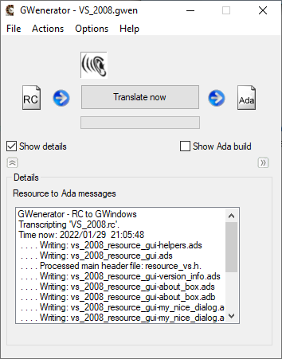
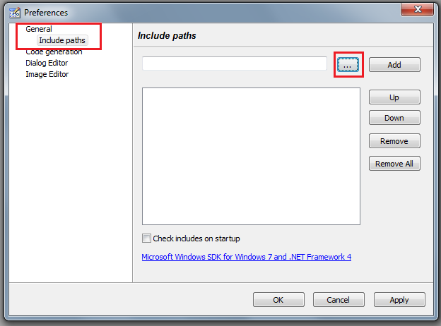
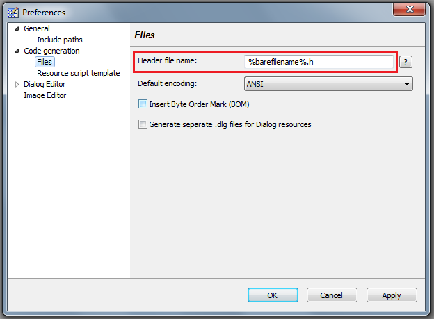

GWenerator is a code generator that translates a
Resource Compiler script file (.rc or .dlg)
into an Ada package for the GWindows GUI system.
This tool comes in two "flavours":
- A graphical, user-friendly version, GWenerator.exe
- A command-line version, rc2gw.exe
GWenerator doesn't pretend to be the ultimate tool, but is rather there to fill the gap between visual GUI design and the wonderful GWindows programming framework. Fortunately, there is a way, though not perfect, nor complete, nor interactive, to separate the GUI design and the code generation. This way is the Resource! There are many Resource Editors for Windows, for more than 27 years (in 2016). It ranges from the antique DlgEdit to Visual Studio 2015 for the editors provided by Microsoft. In the freeware or open-source world, there are also some, e.g. ResEdit. What was missing, to benefit from that source of GUI design, was a parser for the resource script files. It is precisely around such a parser that GWenerator is built.
GWenerator translates those resources that are meaningful to be translated, that is:
- dialogs
- menus
Typically, a resource like XYZ.rc will be translated into XYZ_Resource_GUI Ada package (.ads and .adb), that can be "with"-ed from your application, for instance XYZ.adb. Note that the graphical interface of the tool is build through the tool itself! It means that looking at GWenerator.rc and the GWenerator_Resource_GUI gives you a good example of what are the inputs and outputs.
The advantage of having a tool like GWenerator instead of
using the resource items directly
is that once these resources are as GWindows code,
they can be transformed dynamically (e.g. status of dialog items, recent
file list menus), and benefit from the high-level, object-oriented, safe, and easy to program
framework of GWindows. Edit box contents can be set or read without
needing interfacing C strings. You can program within the GWindows
type system.
You don't need to mix GWindows with tricky, low-level Win32 elements as when you are using
the resources directly.
It is also perfectly possible to mix
dialogs or menus from the GWenerator tool and other GWindows elements which have been
programmed in a "non-visual" way.
After all, the compiler cannot distinguish what is automatically generated and what is typed by hand.
Eventually, parts of the generated code can be reused for more profound transformation or automation, but in most cases the link [graphic edition → automatic code generation] would be better to be kept. For dynamically adding dialog items, better to use the inheritance from the generated object types.
Here is a schema describing which tool generates which file when building an application:

- GWenerator projects ("GWen's").
A project serves as to memorize the name of a resource script file (.rc) as well as transcription options. Additionally, you can designate a main Ada application (source or exe). All this information is stored into a project file with the .gwen extension. If you are using the rc2gw command-line tool instead, you can reproduce all the options of the project file with command-line options. - Create a new project
When you start the GWenerator or decide to begin a new project with the "File/New" menu entry, select "Options/Options for this GWen" and set a resource script file name (red box below). You can also choose the file with the "Browse..." button, and may want to remove absolute path after that. If you check the "Listen for newer version" option, GWenerator will monitor
new saves of the resource script and detect when the script is newer than
the generated Ada code.
If you check the "Automatically translate when newer" option, GWenerator
will also launch a new translation of the script into Ada code when it
detects that the script is newer.
If you check the "Listen for newer version" option, GWenerator will monitor
new saves of the resource script and detect when the script is newer than
the generated Ada code.
If you check the "Automatically translate when newer" option, GWenerator
will also launch a new translation of the script into Ada code when it
detects that the script is newer.
- Start a translation
When you press the "Translate now" button, a translation occurs and details appear in the box below as long as you have checked the "Show details" option. The translation also occurs automatically via the mechanism described above.
 - Ada background build
If the "Automatically build when GUI newer" check box is selected in the "GWen" project options, the tool will rebuild your application automatically whenever the generated Ada sources are newer than the executable (or any object file) you have specified. The same occurs on demand when you press the "Build now" button in the right part of the user interface. The right part is shown when you check the "Show Ada build" option (cf red oval in the picture here).
You need an Ada compiler (Ada 95 or more) that compiles for Windows 32 bit. Only GNAT has been tested with GWindows, but probably any will fit.
If you have GNAT installed, go to the "src" sub-directory and start "make.cmd". Then, the GWenerator.exe is built, as well as the command-line version, rc2gw.exe.
For programming with the tool, you may want an installation of the GWindows system, although a full one is included in the RC2GW package (built for ANSI, i.e. 8 bit character applications).
If you want to modify the tool, you may need to modify the RC.l and RC.y files, especially if you want to expand the grammar for new resource styles, options or whatever (the possible combinations are huge!). In that case, you also need to build "ayacc.exe" (via: "gnatmake ayacc.adb") and "aflex.exe" (via: "gnatmake aflex.adb") which are in the "ayacc95" and "aflex95" sub-directories. These executable have to be put into a directory callable from the PATH or directly into the "src" sub-directory along with the RC.l and RC.y files. Then, "make -r" recreates some Ada sources from the RC.l and RC.y files and builds rc2gw.exe using these new sources. If you are confused by these generators of code generators, you can also submit .rc files (or fragments) to the project coordinators and hope they will do something good with it...
Go to the "test" sub-directory and start "make_all.cmd".
For each name mentioned in "make_all.cmd",
you will get first a code generation for a resource (.rc) file.
For instance
GW_RE_App.rc will give a GW_RE_App_Resource_GUI Ada package (.ads and .adb).
Then an application will be built (GW_RE_App.exe).
There are several resources tested:
- GW_RE_App.rc is created with ResEdit; there is a demo application with the same name
- VS_2008.rc is created with Visual Studio 2008; there is a demo application with the same name; we choose to translate it with the "one package per item" option
- TeXCAD.rc, only to test parsing; no demo
- AdaGIDE.rc, only to test parsing; no demo
- Web??.rc, resources downloaded from Internet by "googling" keywords
- GNAVI - GWindows SourceForge project site:
here.
.
You can download GWenerator from there.
- GNAT, a free Ada compiler with which GWenerator can be compiled:
- GNAT Web site: here.
- Free GNAT Community Edition version to be found here, comes with the wonderful GNAT Studio (GPS).
- AdaGIDE: a free Development Environment for GNAT, as alternative to GNAT's GPS, e.g. to separately build tools in parallel to a GPS session: here.
- ResEdit, a very cool and free resource editor, unfortunately
no more maintained since around 2020.
The good news are that a copy (in two versions: 32 bits, 64 bits) of the ResEdit executable (without its useless and problematic installer) is now provided with the GWindows installer.
The files have been checked by AVG, Avira, and VirusTotal, an online meta-virus scanner using more than 50 commercial scanners.
You find in Annex 1 a guide for configuring ResEdit.
- support all images, icons, videos embedded in dialogs
- parse the "Dialog Info" - DLGINIT block
- 1.11 (30-Aug-2018):
- support for BS_MULTILINE for buttons and check boxes
- all files written (Ada files and compiled resources) are lower case
- code generated passes GNAT's -gnatyu style check
- 1.04 (10-May-2016):
- support for NOT WS_BORDER in edit boxes (with ES_READONLY, it emulates labels from which you can copy & paste text, as in Explorer's properties boxes)
- proper casing in generated Ada sources (passes GNAT's -gnatyaknpr style checks)
- 1.03 (5-Apr-2015): support for IDC_HAND, WS_VISIBLE and NOT WS_VISIBLE
- 1.02 (23-May-2012): added Read_Only to Edit_Box'es
- 1.01 (19-Aug-2011): added 'Compile resource only' action in GUI
- 1.00a (2-May-2011): added main application starter
- 0.99 (28-Feb-2010):
- Ada background build or on-demand build
- a few improvements on supported controls
- 0.98 (10-Aug-2009):
- Generated code compatible with Ada 95 (there was some 2005-only lines)
- Enabled visual styles (Windows XP, Vista and later) in GWenerator's own interface by adding a 'manifest.xml' in the resource
- 0.975 (05-Jul-2009):
- new Initialize_controls option: initialize some controls with fake contents, for test/debug; analogous to Ada's Initialize_Scalars pragma
- better support for: progress bars, tree views, list views, static borders, some special window styles
- 0.97 (01-Jun-2009):
- a test application with all of a resource's dialogs is optionally generated
- width/height settings in dialogs now refer to client area (bug fix)
- CONTROLs of "Button" and "Edit" classes... understood as alternative to 'typed' button/editbox controls
- much more of resources files from MS Visual Studio, Borland Resource Workshop, ResEdit and others are now translated
- 0.96 (15-May-2009):
- some rc grammar additions for matching ResEdit 1.4.4.19 supplemental tags
- VersionInfo strings appear in generated code
- 0.95 (28-Nov-2008): first working version of GWenerator.exe (the GUI flavour)
- 0.9 (4-Sep-2008): following to-do's were done:
- Coordinate conversion factors (base_unit_x,y) are set by default. These values can be overridden: in RC2GW, option -x# and -y#.
- New option -s splits the generated code in 1 package per dialog or menu, plus 1 for helper code and 1 for constants (ID's).
- Now parsing the first #include resource.h to get the right constants for symbols IDs.
- Constants for common IDs: IDOK, IDCANCEL, etc. (GWindows.Constants) are not redefined.
- Bitmaps controls as "CONTROL... WC_STATIC, SS_BITMAP" supported
- 0.8 (12-Aug-2008): first version released.
- 0.0 (28-Jul-2008): begin, with an AYACC grammar for .RC files.
- André van Splunter, for the nice name (GWenerator) and his knowledge of both Windows and GWindows!
Upon the first start of ResEdit, you may get the following message:

This means ResEdit has no access to files such as "windows.h", that are needed.
Just say "No". Then, go to Preferences,

then, General → Include paths:

We assume here that GNAT is installed in the directory "C:\GNAT\2019", just for example.
Then the include directory required for ResEdit will be "C:\GNAT\2019\x86_64-pc-mingw32\include".
You can see the actual GNAT directory in the PATH (command "path" in the command-line interface, cmd.exe)
- It is recommended to have a proper naming convention for the ".h" files containing the resource constants.
It may be especially useful if you have several resource scripts in the same location.
For instance the interface with "GWenerator.rc" has "GWenerator.h" instead of the default "resource.h".
To that aim, in the preferences, put "%barefilename%.h" instead of "resource.h" as Header file name.

- Sometimes, the auto-resize feature of ResEdit is too narrow and the last word of some labels are cut out
when rendered by GWindows. The solution is to switch off the auto-resize feature:
Preferences → Dialog Editor → Control preferences → Auto resize controls: Never.
- Ada PDF Writer - pure Ada, standalone
- Excel Writer - pure Ada, standalone
- Generic Image Decoder - pure Ada, standalone
- Ini file manager - pure Ada, standalone
- Zip-Ada - pure Ada, standalone
NB: some of these GWindows examples may use only partially GWenerator.
- Open-source applications:
- Commercial applications:
- Corporate (internal) applications:
- Imaging toolset :

- A Portfolio Model for Natural Catastrophe Reinsurance
(presented at Ada-Europe 2012) :

- Imaging toolset :


The following are observations with Visual Studio Community 2015, for Win32 C++ projects. This is a way to design user interfaces for GWindows. Just ignore the ".cpp" and many other files, they do nothing.
-
As the GWenerator understands (so far) only 8-bit characters, you need VS to write the ".rc" and ".h" files with this encoding.
In the project properties, choose "Configuration Properties" → "General" → "Character Set" → "No Set".
You may need to convert (once) the ".rc" and ".h" files to 8-bit (ANSI) encoding, for instance via Notepad++.
Then VS remembers the encoding choice. -
It is recommended to have a proper naming convention for the ".h" file
containing the resource constants instead of the default "resource.h" (same remark as for ResEdit).
In the Resource View, right-click on the resource name, choose "Resource Includes..." and use a proper name.